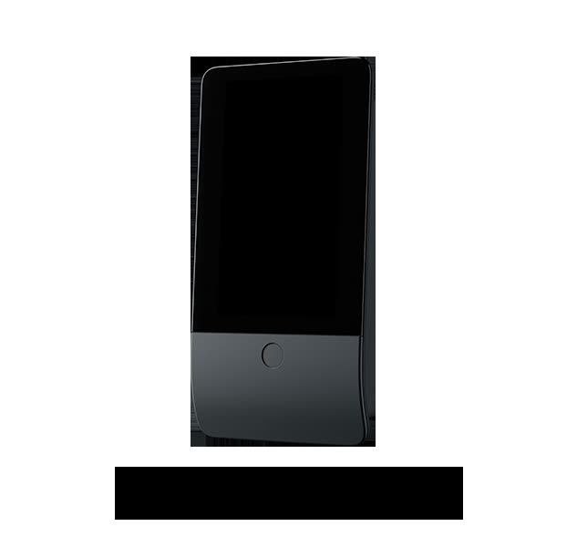

Domovní automatizace
Elektromontážní práce, prodej elektromateriálu a spotřebičů.

Domovní automatizace, někdy také ne zcela správně označovaná inteligentní elektroinstalace, umožňuje zanést do klasické elektrické instalace určité prvky inteligentního chování domu.
Jedná se o velmi široký obor, který může začínat jednoduchým propojením čidel zabezpečovacího systému domu s osvětlením a jeho inteligentním spínáním podle přítomnosti osob v místnosti a přes ovládání teploty v místnosti podle preferencí přítomného uživatele může pokračovat až po úplnou automatizaci domácnosti, kdy jsou spotřebiče automaticky spínány v době, kdy střešní solární elektrárna produkuje nadbytek elektrické energie, nebo v době nízkého tarifu dodavatele.
Jsme schopni realizovat projekty od těch nejjednodušších až po Vaše představy, neváhejte se na nás obrátit a konzultovat s námi Vaše požadavky.